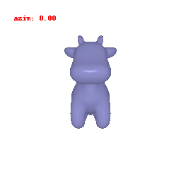

**Assignment 1: Template Webpage**

Student name: XXX

This is a simple template webpage for assignments. Feel free to use this one or any other template.

(##) Part 1

(###) Show an img


(###) Show a gif




<!--- Markdeep & image comparison library - probably no need to change anything below -->
<style class="fallback">body{visibility:hidden;white-space:pre;font-family:monospace}</style><script src="./resources/markdeep.min.js"></script><script>window.alreadyProcessedMarkdeep||(document.body.style.visibility="visible")</script>
<script src="https://ajax.googleapis.com/ajax/libs/jquery/1.11.0/jquery.min.js"></script>
<script src="./resources/jquery.event.move.js"></script>
<script src="./resources/jquery.twentytwenty.js"></script>
<link href="./resources/offcanvas.css" rel="stylesheet">
<link href="./resources/twentytwenty.css" rel="stylesheet" type="text/css" />
<script>
$(window).load(function(){$(".twentytwenty-container").twentytwenty({default_offset_pct: 0.5});});
</script>
